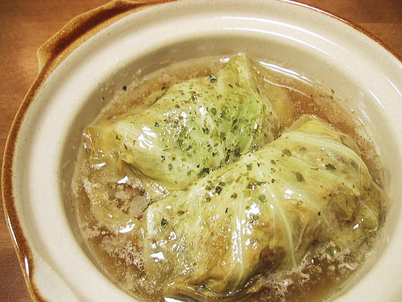

Image courtesy of Shizuoka Gourmet and recipe adapted from Slow Cooker Adventures
What I love most about this recipe is how the lemon brings out the flavors of the fresh tomatoes inside each cabbage roll and the cabbage takes on a "sweetness!" They are so yummy!
It does take a long time to make though, so if you do not have the time but want the flavours, please see the notes on an alternate method of making this recipe.
Servings 30 rolls
Prep Time 1 hour
Cook Time 6 hours
Total Time 7 hours
If you do not have the time to make cabbage rolls, opt for a cabbage casserole instead.
Simply follow step 1, then chop the cabbage into whatever size you desire, and mix everything in a slow cooker with enough water to be just below the surface of your ingredients.
Serving Size 1 cabbage roll Serving Per Container 30Nutrition Facts
Amount Per Serving
Calories
190 kcal
Total Fat
13 g
Saturated Fat
7 g
Polyunsaturated Fat
0 g
Monounsaturated Fat
0 g
Cholesterol
5 mg
Sodium
5 mg
Potassium
0 mg
Total Carbohydrate
17 g
Dietary Fiber
2 g
Sugars
14 g
Protein
2 g
Values are only an estimate, and in no way to be taken as 100% accurate.